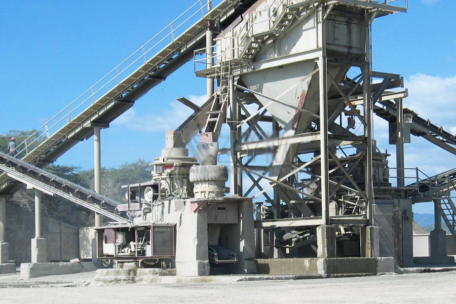

- Home >
- application case >
- gravel crushers for sale

Construction waste crushing production line

Mobile construction waste crushing station for urban construction waste crushing.
gravel crushers for sale
Price money of the Henan hydraulic cone crusher, Zhengzhou 200 ton per hour stone crusher manufacturers which
Key words: price of cone crusher, cone Crusher manufacturers, stone crusher
Description: the market price of cone crusher is the most concerned issues, CAG Zhengzhou mining machinery hydraulic cone crusher for production when output from 50 tons to 200 tons, roughly between a hundred thousand of the hundreds of thousands of. The gravel Crusher cone crusher is an important, either sand or crushed stone production line are inseparable from the production line.

Description of price of cone crusher
The market price of cone crusher has been the most concern for the user, because in many of the crushing equipment cone crusher’s sales and market demand is the biggest, as an important selling equipment, its price is the biggest factor in the market. But in recent years, due to the instability of the steel market leading to the emergence of different sizes of the cone machine price fluctuations. Shanghai CAG mining machinery equipment cone limited production of broken price roughly in the hundreds of thousands to hundreds of thousands. Factory production has a variety of specifications for a variety of prices of equipment for the user to choose.
Sichuan Guangyuan stone factory is producing 200 tons of sand production line is equipped with CAG machine hydraulic cone crusher
Shanghai CAG Mining Machinery Co., Ltd. is the production of hydraulic cone crusher crushing with good performance by the Sichuan Guangyuan stone factory customer recognition. Sichuan Guangyuan Nissan 2000 the mechanism of sand production line, using the CAG feeder jaw crusher, hydraulic cone crushing machine, sand making machine, which thin hydraulic cone crusher crusher material granularity, grain shape, flakiness content low, sand making machine reduces the workload. The hydraulic cone crusher is still in Luoyang, Fujian and other provinces and cities in the mechanism of sand production line to obtain a successful application.
CAG hydraulic cone crusher for ore machine description:
Size: 65-300mm (mm) production capacity: 12-1000t/h (ton/hour), of which the materials: limestone, granite, River gravel, dolomite, granite, iron ore and other rocks, ore. Applicable to metallurgy, construction, road building, chemical and ceramic industry in the crushing of raw materials can be broken over medium and medium hardness of various ores and rocks. Cone Crusher crushing ratio, high efficiency, low energy consumption, equal product granularity, suitable for ground and of various ores and rocks. It with the traditional structure of the cone crusher is clearly different in design and focus on the known types of cone crusher is the main advantage of.
With China’s rapid economic development, hydraulic cone Crusher manufacturer in the market has been gradually increased, CAG miner as the brand manufacturers of mining machinery industry, continuously improve the crushing technology in the development process, to build industry-leading stone crusher. CAG mine machine hydraulic cone type broken machine stable of performance effective of achieved has material of broken, to city economic of development brings has is big of economic, CAG mine machine as hydraulic cone type broken machine manufacturers, in development process in the constantly of innovation technology, insisted independent innovation capacity, launched of broken equipment performance stable, and broken capacity strong, guarantee has equipment of production, for city infrastructure provides has sufficient of gravel material.
CAG hydraulic cone crusher for ore machine parts described below success story
(1) the heze city, Shandong Qingyuan plant producing 300 tons of stone granite production line imported CAG Zhengzhou mining machinery hydraulic cone Crusher
(2) Yunnan Qujing City used crushed basalt gravel production lines equipped with CAG mine hydraulic cone Crusher
(3) Shanghai CAG mining machine hydraulic cone crusher for producing 200 tons of granite stones line the upper hand colored in Datong, Shanxi
Leave Me A Message, Now
If you have any questions regarding equipment prices, production line configuration or other problems, you can send a message to us, we will contact you soon.